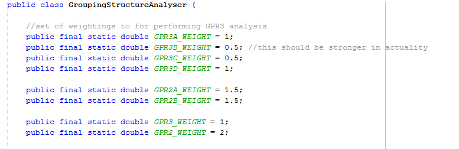

The music generator makes use of the GTTMAnalyser module to help it generate musical fragments. The GTTMAnalyser provides a rating system which is used to indicate how well fitting potential music solutions are to a given grammar structure. The ratings system has been further expanded to include a weightings system which can increase of decrase the impact of the ratings given by the GTTMAnalyser module. This reflects the GTTM theory suggestion that 'In order to make the theory fully predictive, it might be desirable to assign each rule a numerical degree of strength, and to assign various situations a degree of strength as evidence for particular rules.'
At this stage the weightings system hasn't been properly formalised or assessed. The GTTM theory isn't clear on which preference rules may be assigned higher ratings and to what degree their ratings should be preferred. Research into the best balance for the weightings could be a future project for the program.
The weightings system has been implemented by including public static double variables to the top of each analyser module class. These are used to create weighted averages when constructing a rating for use by the music generator.
An example of the weightings fields for the GroupingStructureAnalyser classHere is an overview of all the weightings fields that have been implemented:
Used to weight how strongly the GPR3A rule should be considered when the assessGPR3() method is called.
Used to weight how strongly the GPR3B rule should be considered when the assessGPR3() method is called.
Used to weight how strongly the GPR3C rule should be considered when the assessGPR3() method is called.
Used to weight how strongly the GPR3D rule should be considered when the assessGPR3() method is called.
Used to weight how strongly the GPR2A rule should be considered when the assessGPR2() method is called.
Used to weight how strongly the GPR2B rule should be considered when the assessGPR2() method is called.
Used to weight how strongly the GPR2 rule should be considered when the assessGPR4() method is called.
Used to weight how strongly the GPR3 rule should be considered when the assessGPR3() method is called.
Used to weight how strongly the MPR5a rule should be considered when the assessMPR5() method is called.
Used to weight how strongly the MPR5b rule should be considered when the assessMPR5() method is called.
Used to weight how strongly the MPR5c rule should be considered when the assessMPR5() method is called.
Used to weight how strongly the MPR5d rule should be considered when the assessMPR5() method is called.
Used to weight how strongly the MPR5e rule should be considered when the assessMPR5() method is called.
Used to weight how strongly the MPR5f rule should be considered when the assessMPR5() method is called.
Used to weight how strongly the MPR5 rule should be weighted. Currently unused.
Used to weight how strongly the TSPR2a rule should be considered when the assessTSPR2() method is called.
Used to weight how strongly the TSPR2b rule should be considered when the assessTSPR2() method is called.
Used to weight how strongly the TSPR2 rule should be considered when the getTSPR2andTSPR3() method is called.
Used to weight how strongly the TSPR2 rule should be considered when the getTSPR2andTSPR3() method is called.
Used to weight how strongly the Branching Condition rule should be considered when the assessPRPR3() method is called.
Used to weight how strongly the Melodic Condition A rule should be considered when the assessPRPR3() method is called.
Used to weight how strongly the Melodic Condition B rule should be considered when the assessPRPR3() method is called.
Used to weight how strongly the Pitch Condition a rule should be considered when the assessPRPR3() method is called.
Used to weight how strongly the Harmonic Condition A rule should be considered when the assessPRPR3() method is called.
Used to weight how strongly the Harmonic Condition B rule should be considered when the assessPRPR3() method is called.